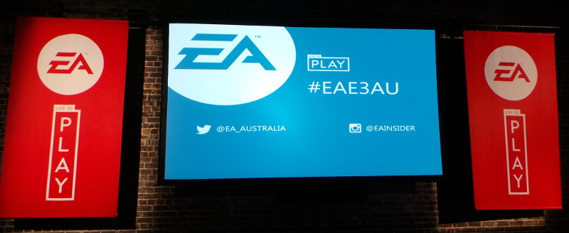
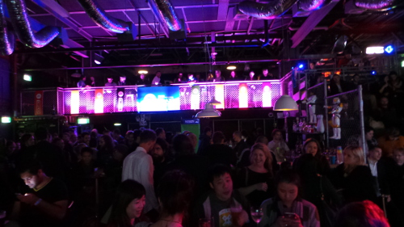
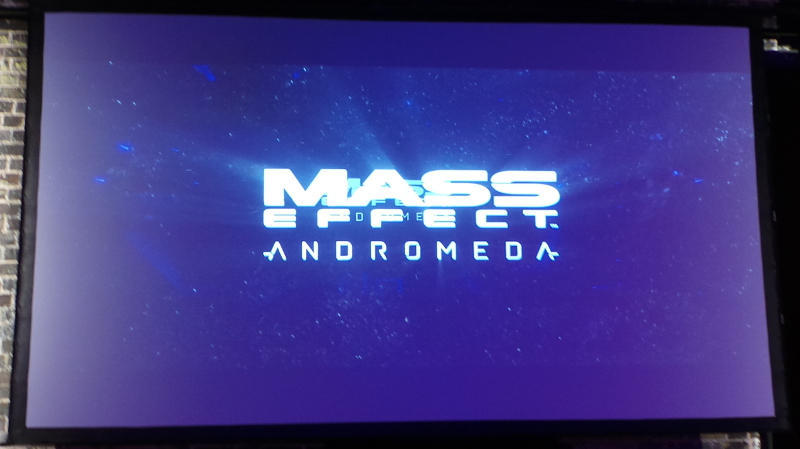
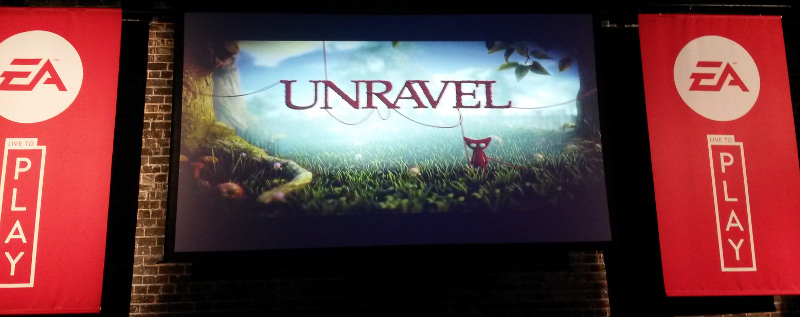
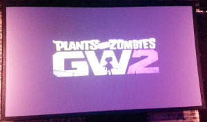
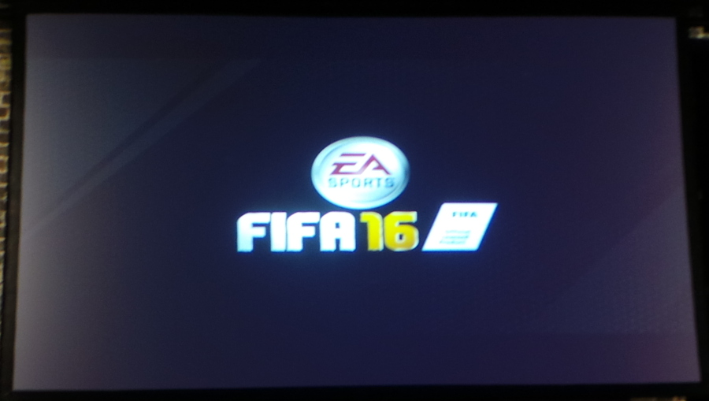
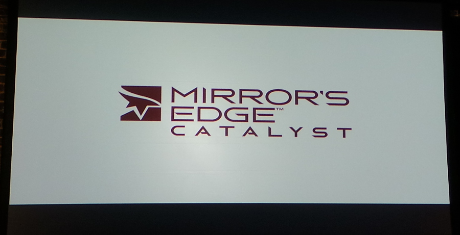
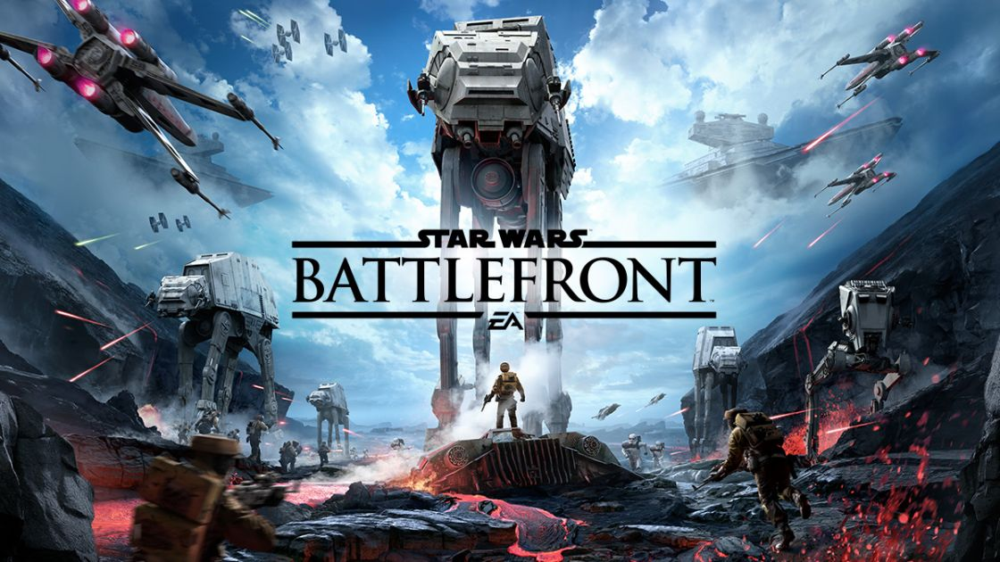
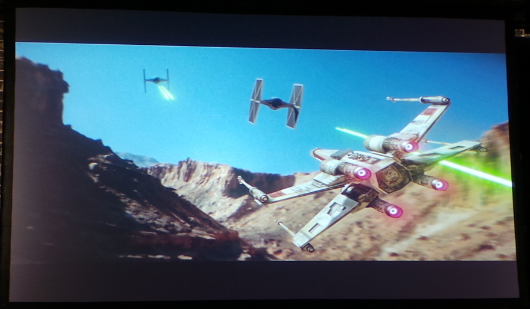
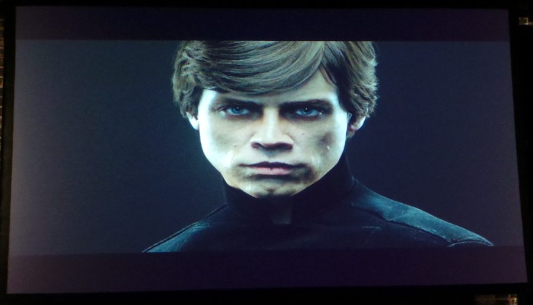

Getting My Game On with Electronic Arts!

Last night I was fortunate enough to attend the Electronic Arts
Australia E3 event in Sydney, thanks to Husband winning tickets to
attend. It was held at an interesting venue, the Standard Bowl at
Taylor Square. It’s above Kinselas which, back in the day, used to
be a bit of a “raging” nightspot. While none of the live E3
events are happening here, a few of the gaming companies are holding
screenings of their respective events. I’ve long been a fan of EA
games, with the Sims, Spore, Mass Effect, and Plants v Zombies, and I
was excited to see what was coming over the next couple of years.

People were encouraged to cosplay Star Wars, but I think a few
people were put off due to the inclement weather. But we did see a
Twi’lek, Storm Trooper, Leia, a rather good Tuskan Raider, and a very
tall Darth Vader. Husband and I went so far as to wear Star Wars
themed shirts.
It
was a standard basic drinks with not a lot of food schmooze event.
The theme of the night was definitely “Play”. There was FIFA15 to
be played, pool, pinball, and some ten pin bowling later in the evening.
Now, to the screening of the EA announcements, which is the reason we were there. (Watch the whole thing here, nb: there is lots on this video that we did not see on the night.)

The opening screen was the next chapter in the epic series of
Mass Effect. Mass Effect Andromeda looks amazing. It teased
exploration and more amazing graphic art. There was no real
information on gameplay or content, but there was the appearance of
Johnny Cash’s “Ghost Riders” song. Release information was that it would
be out “Holiday 2016”. I’m guessing that means in time for
Christmas. Merry Christmas to me!
The next installment of Need For Speed was shown next.
Bringing together all of the best features from previous NFS
games, including detailed customisation. The graphics were
incredible, the gameplay looked amazing, and while “car games” are not
my thing, Need For Speed fans will not be disappointed. Due for
release November 3rd, 2015.
Star Wars: The Old Republic is getting a new expansion. Knights of the Fallen Empire
is a move towards player driven story. From the sounds of it, the
gameplay is going to take a “Bioware” approach, similar to Mass Effect,
where your choices will affect your character and the story. It
sounds awesome, and it makes me want to sign up for SWTOR now, because
they also announced that Knights of the Fallen Empire would be free for
current subscribers. Due for release October 27, 2015.

The next game was a bit of a surprise, and quite frankly, looks completely amazing.
Unravel
is a puzzle platformer (one of my favourite types) with a cute hero
character. Yarny is a little yarn wrapped character who uses the
yarn available to him to go on his journey. Not much was given
away about the story, but the game itself looks like a lot of fun.
It looks like a game that will appeal to the younger gamers too.
There is no official release date, which leads me to think it will
be 2016.

Last year Plants vs Zombies jumped out of the garden and went
into full blown Warfare. It brought some of our favourite plants
and zombies into a PvP world. The big downside of this game was
you didn’t have offline solo, or split screen co-op play. This is
something they’ve introduced in
Plants vs Zombies: Garden Warfare 2.
This is really exciting, as it means that my son and I can play
it together. There will also be free content updates after
release.
Due for release Autumn 2016.

I’m not a sports game person. I think the last time I
played one, it was an NBA game in 32bit graphics. It was terrible,
or more to the point, I was terrible at it. In fact, I think it
put me off gaming for quite a while. Nevertheless, sports games
have come such a long way. Not only in the graphics department but
game control and playability.
FIFA16
will not disappoint the sports game enthusiasts. They’ve
introduced even more game control and balanced play. I think,
though, more importantly, there are now women’s teams available to play,
including the Australian Matildas. In fact, so much so that one
of the Matilda’s current team is going to appear on the cover of the
game! It’s very exciting.
Release is due September 25, 2015.
The
next title got a bit lost in the presentation, in between FIFA16 and
the giant announcement for the night, it wasn’t as punchy. Mirror’s Edge: Catalyst
is a free roaming, parkour style, martial arts fighting, story game.
It is the origin story for the original game which was released
back in 2008/2009. Due for release February 23, 2016.

Let’s face it, the entire night was based around Star Wars Battlefront.
At least, so said all the t-shirts that the staff were wearing,
the drink coasters, and the decor. Star Wars Battlefront is an
action game played with first or third person view (which is good as I
prefer third). You get to travel within the Star Wars universe and
complete cooperative missions on or offline, with bots or as a split
screen co-op, but does not have an offline campaign mode.

Battles are planet based, so you won’t be able to zoom around in
space, nor will there be a Battle over Coruscant type scenario. The
game’s online multiplayer mode supports up to 40 players in one match
and 12 multiplayer maps will be available at launch. These maps will
feature four locations from the Star Wars universe – Hoth, Tatooine,
Endor, and Sullust. You can choose Rebels or Empire, and there are
customisable options for your character.

There will be a few playable hero characters too, such as
Luke Skywalkeror Darth Vader. It was hard to watch the trailer and
not feel super excited about the release of this game. I’m sure
that Husband and I will be co-opping this game for hours on release day!
Due for release
November 19, 2015.
It’s been a while since I went to any type of release event, and I
had forgotten how much I enjoy them. This one wasn’t “official”
for me, so I got to relax a bit more, which was nice. I’m very
excited about some of the games coming out from EA over the next 18
months. Is there anything on this list that you can’t wait to
play?